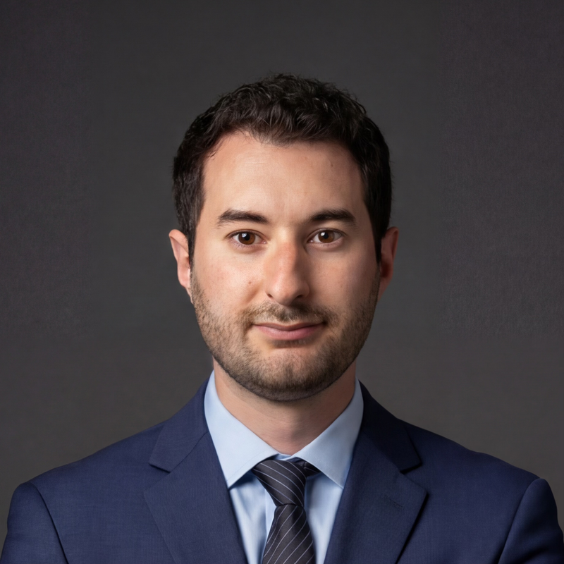

Daniel Palay
Co-Founder
Daniel Palay is a co-founder of Coop Search Group, a boutique executive search firm focused on healthcare IT, medical device, and life sciences. He specializes in client-facing and commercial roles at Series A and early-stage companies, where the first few leadership hires tend to make or break the business.
Daniel's path to search wasn't typical. He started in the clinical lab as a certified medical laboratory scientist, moved into account management, and then spent years in executive recruiting placing senior talent for PE-backed healthcare technology companies. That mix means he speaks the language on both sides of the table: he understands the clinical and technical realities of the products these companies sell, and he knows what it takes to sell them.
He built Coop to give founders and growth-stage leaders a search partner that moves fast, stays hands-on, and doesn't hide behind process. Every search is run by Daniel directly, from first conversation to signed offer.
LinkedIn →